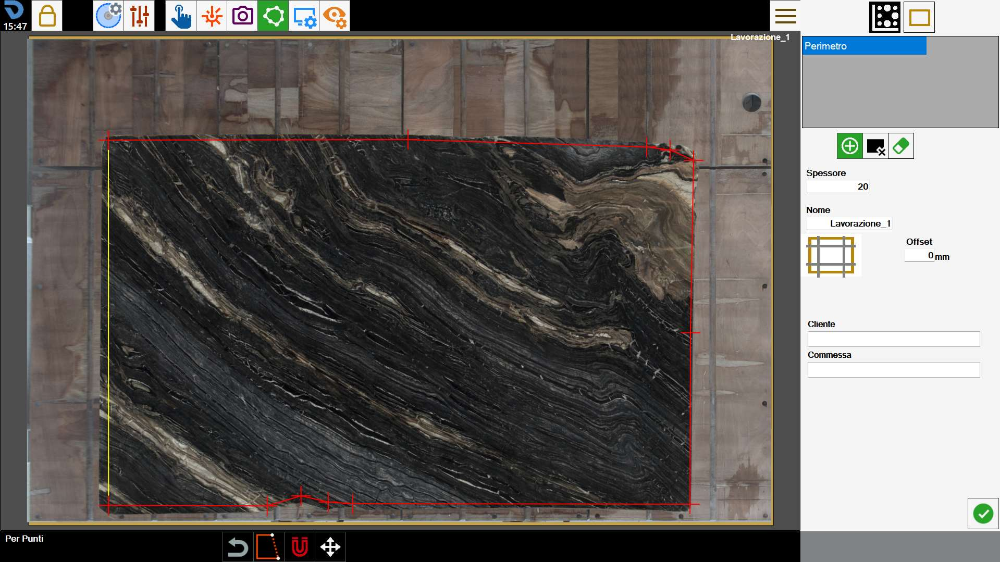
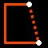
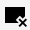

Damit das Programm funktionieren kann, muss es den Rand der zu bearbeitenden Platte kennen. Mit dieser Funktion kann der Umfang nachgezeichnet werden.

Modi zur Erstellung des Umfangs
Das Programm ermöglicht dem Bediener, den Umfang in einem der folgenden Modi zu zeichnen:
Rechteckmodus | |
 | Punktmodus |
Während der Umfangserstellung kann jederzeit zwischen den Modi gewechselt werden.
Beim Wechsel vom Modus „Punkte“ in den Modus „Rechteck“ wird der Umfang in ein Rechteck umgewandelt und alle Polygon-Eckpunkte gehen verloren.
Zur Durchführung dieses Vorgangs wird eine Bestätigung angefordert.
Rechteck
Dieser Modus ermöglicht die Erstellung rechteckiger Umfänge.
Um Größe und Position des Rechtecks zu ändern, können die gelben Kreise im Arbeitsbereich gezogen oder die in der darunterliegenden Leiste angezeigten Werte geändert werden.

Abmessungen | Abmessungen des Umfangs entlang der X- und Y-Achse. |
Position | Koordinaten des unteren linken Rechteckpunkts relativ zur unteren linken Ecke des Arbeitstisches. |
Nach Punkten
Dieser Modus ermöglicht die Erstellung von Polygonen mit beliebiger polygonaler Form.
Dazu kann der Bediener die Punkte, die den Umfang bilden, an den gewünschten Positionen platzieren, wie in der folgenden Abbildung gezeigt.

In diesem Modus kann mit dem Umfang über folgende Schaltflächen interagiert werden:
 | Umfang schließen |
 | Letzten Punkt entfernen |
Nach dem Schließen wird der Umfang blau dargestellt und seine Eckpunkte durch gelbe Kreise gekennzeichnet.
Sowohl während der Erstellung als auch bei einem geschlossenen Umfang können die Eckpunkte im Arbeitsbereich jederzeit verschoben werden, um die Genauigkeit zu verbessern.
Untere Leiste
Der Bediener kann mit einem im Arbeitsbereich vorhandenen Umfang über die Schaltflächen im unteren Bildschirmbereich interagieren.
 | Am Kreuzlaser einrasten |
 | Umfang verschieben |
Neuen Umfang erstellen
Das Programm ermöglicht die Erstellung mehrerer Umfänge, auf denen die Werkstücke für die Bearbeitung angeordnet werden können.
Außerdem können Bereiche der Platte definiert werden, in denen keine Werkstücke platziert werden dürfen.
 | Umfang |
 | Zu vermeidender Bereich |
 | Umfang löschen |
Die erstellten Umfänge sind in der Liste oben rechts sichtbar. Um einen Umfang zu ändern, genügt es, ihn im Arbeitsbereich oder den entsprechenden Eintrag in der Liste auszuwählen.
Der aktuell ausgewählte Umfang hat blaue Konturen und gelbe Eckpunkte; die übrigen lassen sich zusätzlich anhand ihrer Farbe unterscheiden: grün für Plattenumfänge, orange für zu vermeidende Bereiche.

Auf diesem Bildschirm können Entspannungsschnitte zur Platte hinzugefügt werden.
 | Platte besäumen |
Um die Erstellung des Umfangs abzuschließen, wird der Bediener aufgefordert, einige Informationen zur auszuführenden Bearbeitung einzugeben.
Dicke | Der Bediener muss die Stärke der auf dem Arbeitstisch liegenden Platte angeben. |
Name | Name, der der Plattenbearbeitung zugewiesen werden soll. |
Kunde | Gibt den Namen des Kunden an, für den der Auftrag ausgeführt wird. Dieses Feld ist optional. |
Auftrag | Gibt eine Kennung für den Auftrag an. Dieses Feld ist optional. |
Plattenstärke und Bearbeitungsname sind Pflichtfelder und müssen vor der Bestätigung des Umfangs ausgefüllt werden.
Die Angaben zu den darunterliegenden zusätzlichen Eigenschaften müssen dagegen nicht ausgefüllt werden.
Zu vermeidende Bereiche
Zu vermeidende Bereiche sind Zonen der Platte, die der Bediener für die Positionierung von Werkstücken auf der Platte sperren möchte.
Gründe hierfür können Brüche im Material, optisch ungünstige Adern oder die Notwendigkeit sein, bestimmte Bereiche der Platte zu erhalten.
Sie werden im Arbeitsbereich als blaue Zonen dargestellt.

Bei Verwendung der Nesting-Funktion werden die Werkstücke so angeordnet, dass keiner dieser Bereiche belegt wird.